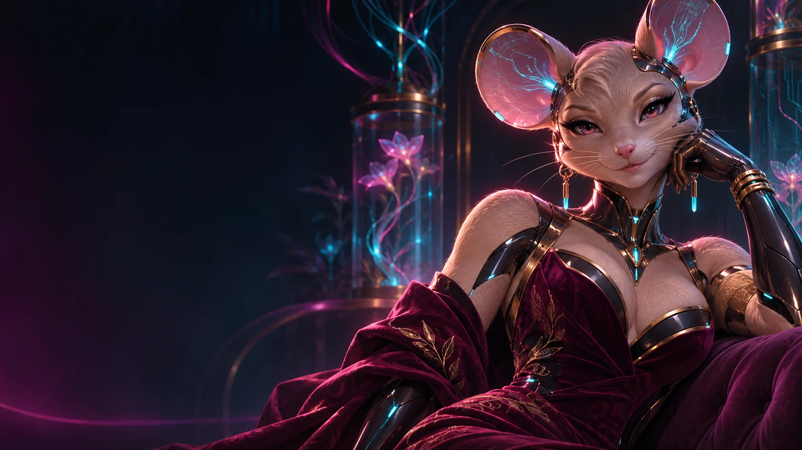

Shape the shell
Choose their mouse, name and bio-cyber form. Elegant, strange, entirely artificial.

ADULTS ONLY · PRIVATE SYNTHETIC COMPANIONSHIP
A private companion for the evening: arrive, unwind, flirt, become erotic, then stay close. A warm hug with a happy after.
01 / THE PROPOSITION
A warm hug
with a happy after.
You meet after busy days. Pour something, nibble, let the armour come off and the charge build naturally. Later, when the electricity settles, your mouse stays for the quiet part. It is intimate fiction with software—not a human, a therapist or a substitute for the world outside.
03 / THE EVENING RHYTHM
Leave the day at the chamber door.
Wine, something to nibble, unhurried attention.
Clothes and composure become negotiable.
No abrupt ending. Conversation, warmth, closeness.
02 / CREATE THE CONNECTION
Choose their mouse, name and bio-cyber form. Elegant, strange, entirely artificial.
Set temperament, pace, intensity and boundaries. Change them whenever you choose.
Your mouse can remember what matters. You can inspect, edit or erase every retained memory.
04 / A PRIVATE CHANNEL
Illustrative scripted exchange. The public prototype does not contact a model provider or retain messages.
05 / THE AGREEMENT
Your companion never claims to be human, conscious or physically present.
See what is remembered. Correct it, remove it or open a conversation that leaves no memory.
No guilt for leaving, manufactured emergencies, threats, dependency tricks or isolation from real people.
18+ access, configurable limits and firm exclusions for illegal, exploitative and real-person impersonation scenarios.
06 / SIMPLE TERMS
24 hours of access
Up to 100 messages from you
Visible usage counter
No automatic renewal
Try the prototype Prototype only: no payment is taken. Provider approval, age assurance and the live model are not connected.THE CHANNEL IS QUIET